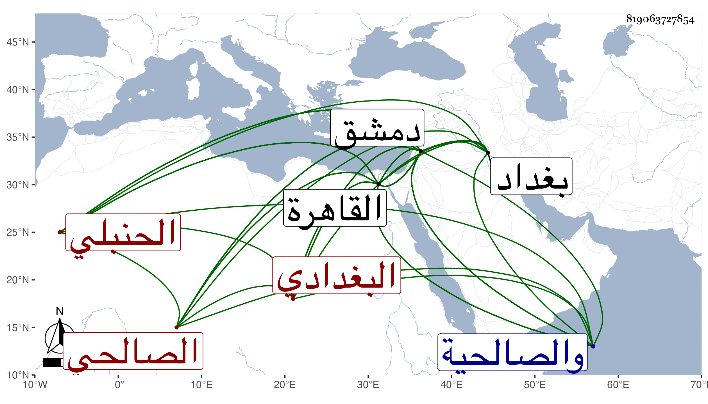

0902Sakhawi.DawLamic.ITO20230111-ara1.EIS1600.819063727854
Biography ID: 819063727854
858
علي بن عبد المحسن بن عبد الدائم بن عبد المحسن بن محمد بن أبي المحاسن عبد المحسن بن أبي الحسن بن عبد الغفار العفيف أبو المعالي بن الجمال أبي المحاسن ابن النجم أبي السعادات أو أبي محمد بن محيي الدين أبي المحاسن بن العفيف أبي عبد الله بن أبي محمد البغدادي القطيعي ثم الصالحي الحنبلي ويعرف كسلفه بابن الدواليبي وبعض سلفه بابن الخراط وهما صنعة عبد الغفار جده الأعلى من بيت جليل . ولد في المحرم سنة تسع وسبعين وسبعمائة ببغداد ونشأ بها فقرأ القرآن واشتغل وكان يذكر أنه أخذ عن الكرماني الشارح أشياء منها الصحيح في سنة خمس وثمانين وأنه سمعه أيضا قبل ذلك سنة اثنتين وثمانين على القاضي شهاب الدين أحمد بن يونس العبدالي البغدادي المالكي أحد من أخذه عن الحجار وأنه سمع على أبيه المسلسل أنابه أبو حفص عمر بن علي القزويني ولم نقف على هذا بل ذكر شيخنا عن المحب بن نصر الله البغدادي الحنبلي ما يدل على اتهامه وبطلان مقاله بعد أن سمع من لفظه أحاديث من آخر البخاري عن شيخه الثاني . وقال شيخنا أيضا أنه سمع من لفظه قصيدة زعم أنها له ثم ظهرت لغيره من العصريين وأنه سمع من لفظه قبلها وبعدها قصائد ما يدري ما أمرها قال : ولكنه ليس عاجزا عن النظم خصوصا وله استعداد واستحضار لكثير من التاريخ والأدبيات والمجون وقد أقام بالقاهرة مدة ثم سكن دمشق ثم رجع إلى القاهرة إنتهى . وجزم غير واحد ممن أخذ عنه من أصحابنا وغيرهم بكذبه وأنه مع ذلك وتركه للمروءة ومداومته السخرية بالناس كان يفتي بما ينسب لابن تيمية في مسئلة الطلاق حتى أنه امتحن بسببها على يد الجمال الباعوني قاضي الشافعية بدمشق وصفع وأركب على حمار وطيف به في شوارع دمشق وسجن على أنه قد ولى فيما بلغني مشيخة مدرسة أبي عمر بصالحية دمشق ثم رغب عنها لعبد الرحمن ابن داود الماضي وقد لقيته بالقاهرة والصالحية وكتبت عنه . ومات بعد في ليلة السبت سادس عشري رجب سنة اثنتين وستين بدمشق سامحه الله وإيانا .
